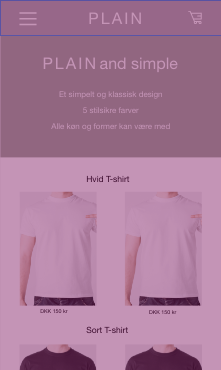

Tema 3 - Grundlæggende UX
Min første prototype
I tema 03 skulle jeg lave prototype af en webshop, hvis formål var at sælge t-shirts. Prototypen lærte jeg at lave i I Adobe XD. Adobe XD er et ideelt program til at lave protyper, da man kan lave et flow, der gør ens design klikbart. Jeg lavede en prototype af et webshop med navnet Plain. Konceptet bag min webshop var at sælge helt plain unisex t-shirts.
